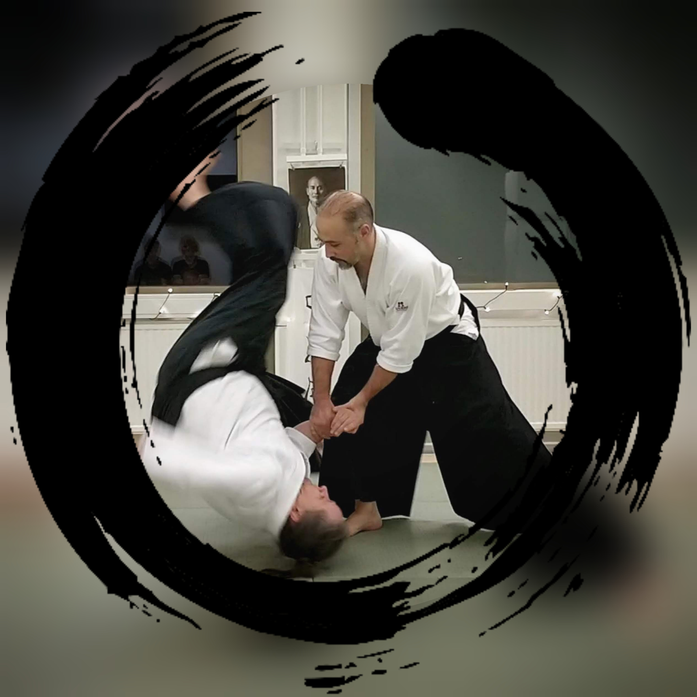

Tervetuloa Minun harrastus Aikido -sivulle!
Aikido on ainutlaatuinen ja monipuolinen kamppailulaji, joka tarjoaa paljon enemmän kuin pelkän fyysisen kuntoilun. Se on taistelulaji, joka perustuu harmonian ja tasapainon periaatteisiin. Aikido tarkoittaa kirjaimellisesti "taihon tietä" tai "henkisen voiman tietä", ja se keskittyy itsepuolustukseen ja konfliktien ratkaisemiseen ilman voimankäyttöä tai aggressiota. Aikido perustuu liikkeiden virtaviivaiseen ja sulavaan suorittamiseen, ja sen tavoitteena on ohjata vastustajan voima turvallisesti ohi tai käyttää sitä hyödyksi. Tämä tekee siitä erityisen sopivan harrastuksen kaikenikäisille ja -kuntoisille henkilöille.
Aikido voi auttaa sinua parantamaan kehonhallintaa, tasapainoa ja joustavuutta. Yksi Aikidon keskeisistä periaatteista on toisen kunnioittaminen ja hyväksyminen, mikä tekee siitä myös henkisen kasvun ja itsetuntemuksen välineen. Aikidon avulla voit oppia hallitsemaan stressiä, parantamaan keskittymiskykyäsi ja luomaan yhteyden muihin harrastajiin. Minun harrastus Aikido -sivustolla jaamme intohimon Aikidoa kohtaan ja tarjoamme tietoa, vinkkejä ja tarinoita harrastuksestamme.
Liity mukaan Aikido-matkaamme ja löydä tämän kauniin ja voimaannuttavan kamppailulajin salaisuudet! Tervetuloa mukaan Aikido-perheeseen!
Tässä on enemmän infoa aikidon historiasta ja filosofiasta: Aikido
Minä harrastan Aikidoa yli 10 vuotta. Aikido on ollut intohimoni yli vuosikymmenen ajan. Aloittaessani sen Azerbaidzanissa, en koskaan olisi uskonut, kuinka syvälle se juurtuisi elämääni ja kuinka voimakas voima se olisi vaikeissa tilanteissa. Matka Aikidon parissa ei ole ollut pelkkää ruusuilla tanssimista. Matkan varrella on ollut pitkiä taukoja, kuten korona-pandemian aiheuttama tauko ja muita henkilökohtaisia haasteita. Nämä tauot ovat tuoneet epävarmuutta ja kysymyksiä siitä, voinko jatkaa tätä intohimoani.
Täällä Suomessa olen kohdannut monia vaikeuksia, mutta yksi asia, jonka olen oppinut Aikidosta, on pysyvyys. Aikido opetti minulle, että jokainen liike vaatii tasapainoa, keskittymistä ja kärsivällisyyttä. Se on opettanut minulle, miten kohdata haasteet ja vastoinkäymiset rauhallisesti ja määrätietoisesti.
Tällä hetkellä minulla on 1. kyu taso, ja vaikka matkani on ollut mutkikas, olen päättänyt jatkaa eteenpäin. Aikido on enemmän kuin vain harrastus; se on elämäntapa ja filosofia. Se opettaa minulle jatkuvaa kehittymistä, itsensä voittamista ja ennen kaikkea, sen opettamaa henkistä vahvuutta. Joten vaikka elämässäni on ollut vaikeita hetkiä ja epävarmuutta, tiedän, että aina pystyn jatkamaan Aikidoa. Se on voimani ja inspiraationi, ja se opettaa minulle, että mikään ei ole mahdotonta, kun omistautuu sydämestään ja sielustaan intohimolleen.
Minä treenaan Helsingin "Aiki Circle" -nimisessä seurassa Malmilla. Meillä on loistava porukka ja erittäin rauhallinen dojo, jossa harjoittelemme aikidoa 2-3 kertaa viikossa.
Lisätietoja seurastamme löydät: Aiki Circle sivulta
Aikido on ollut osa elämääni yli 10 vuoden ajan ja se on opettanut minulle keskittymistä, kärsivällisyyttä ja tasapainoa.
Elämässäni olen tehnyt paljon töitä, mutta nyt keskityn opiskeluun Laurea-ammattikorkeakoulussa, jossa suuntaudun tietojenkäsittelyyn. Olen innokas oppimaan uutta ja rakastan haastavia ongelmia sekä analysoimaan niitä. Rakastan lukemista ja se tarjoaa minulle mahdollisuuden laajentaa näkökulmaani ja oppia uusia asioita. Kiinnostuksen kohteisiini kuuluvat:
Olen aina ollut kiinnostunut maailman tapahtumista ja niiden syvemmistä merkityksistä. Japani on maa, joka yhdistää perinteen ja modernin innovaation ainutlaatuisella tavalla. Tämä kulttuurillinen monimuotoisuus inspiroi minua jatkuvasti.
Voit tutustua tarkemmin taustaani ja ammatilliseen kehitykseeni LinkedIn-profiilisssani
Olen avoin uusille mahdollisuuksille ja keskusteluille, joten älä epäröi ottaa yhteyttä!